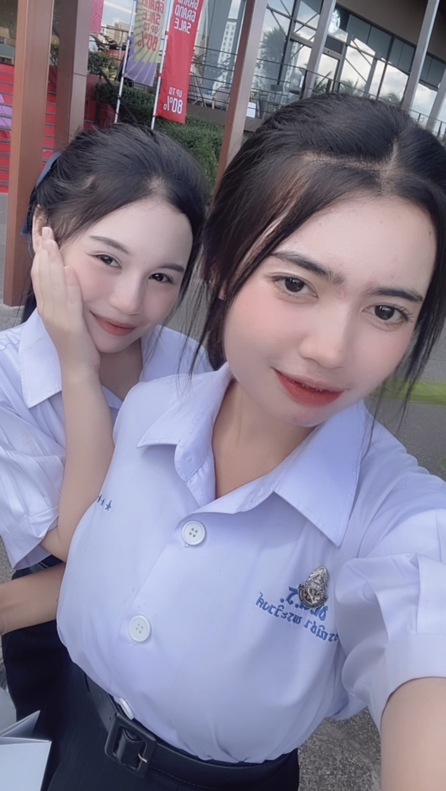

แฟ้มสะสมผลงาน

นักเรียนชั้นมัธยมศึกษาปีที่ 6/1
MY PROFILE • MY EXPERIENCE • MY FUTURE
ชื่อ: นางสาวกัญญาณัฐ ลิบน้อย
ชื่อ: นางสาวอรณิชา พระวิวิงค์
ระดับชั้น: มัธยมศึกษาปีที่ 6/1
คติประจำใจ: ความพยายามไม่เคยทรยศคนที่ตั้งใจ
กำลังศึกษาอยู่ชั้นมัธยมศึกษาปีที่ 6/1
โรงเรียนทุ่งใหญ่เฉลิมราชอนุสรณ์ รัชมังคลาภิเษก
เข้าร่วมการแข่งขันทักษะทางคณิตศาสตร์ เพื่อพัฒนาความรวดเร็วและความแม่นยำในการคำนวณ
มีส่วนร่วมในการทำกิจกรรมเพื่อสังคม ฝึกความรับผิดชอบ การทำงานร่วมกับผู้อื่น และการมีจิตสาธารณะ
ฝึกความเป็นผู้นำ ความสามัคคี การทำงานเป็นทีม และความกล้าแสดงออก
สนใจเกมคณิตศาสตร์ที่ช่วยฝึกการคิดวิเคราะห์ การคำนวณ การวางแผน และการแก้ปัญหาอย่างเป็นระบบ
• ทักษะการสื่อสาร
• การทำงานร่วมกับผู้อื่น
• การคิดวิเคราะห์และแก้ปัญหา
• ความรับผิดชอบและการบริหารเวลา
มีความตั้งใจศึกษาต่อในสาขาที่ตนเองใฝ่ฝัน เพื่อพัฒนาความรู้ และทักษะในการวางแผน การบริหารจัดการ และนำไปประยุกต์ใช้ในการประกอบอาชีพในอนาคต